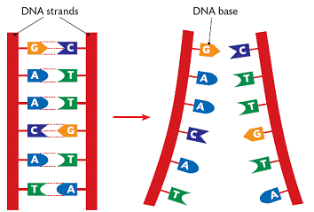

Lab 10: Recursion
Due Date and Submission Requirements
- Due Date: Thursday, November 9th at 11:59 p.m.
- Partner Information: This is an individual assignment. You are allowed to collaborate with other students, but each student must submit their individual, independent solution.
- Submission Instructions: Submit your Lab10Demo.java file to the appropriate D2L dropbox.
The goal of this lab is:
- Write basic recursive methods
Background Information
Human DNA is made up of four building blocks called nucleotides: adenine (A), thymine (T), guanine (G), and cytosine (C). Nucleotides attach to each other in a certain way. All A's and paired with T's, and all G'c are paired with C's.

A random DNA sequence of length 10 could look something like this:
ggctataaca
An intern mistakingly entered DNA sequences into a Stack data structure thinking that they will be analyzed LIFO. However, his Boss told him that the DNA sequences should be analyzed FIFO. As a solution, the intern decides that he will just print out the stack in reverse order (that will give the correct FIFO order).
The intern also made another mistake when entering the DNA sequences. He accidentally mixed up the nucleotides of the base pairs. All A's need to be replaced by T's (and vice versa), and all G's need to be replaced by C's (and vice versa).
For example, the intern entered "ctgtcctt", but the correct DNA sequence is "gacaggaa"
The intern decides that while he prints the stack in reverse order, he will also fix the DNA Sequences
Directions
Using Lab10Demo.java as a starting point, you will fill in the body of the print_stack_reverse_recursive and the fix_string method. You cannot modify anything in the main() method.
the print_stack_reverse_recursive method takes in a Stack data structure that holds DNA sequences (Strings). This method should print out its contents in reverse order (ie, the bottom of the stack is printed out first, and the last thing printed out is the top of the stack). This method MUST use recursion.
as you are printing out stack data in reverse order, you will need to also fix the strings. The fix_string method takes in the incorrect string (s) as an argument, and this method should return the fixed string where all T's and replaced by A's, all A's replaced by T's, all C's replaced by G's, and all G's replaced by C's. This method MUST use recursion.
Starting Code
Output
When you run your program, your output should look exactly like this: sample output.
Hints
- As you recursively call the print_stack_reverse_recursive method, you will need to pass it a smaller stack. You should use the .pop() method (however, remember that you will also need to print out what get's popped off
- For fixing the DNA sequence strings, you can use s.charAt(0) to return at the first character of some string
- To make the string smaller, you can use s.substring(1) which will return the substring that starts at index 1
- for example, if s = "csci132", then s.substring(1) will return "sci132"
Grading (10 points)
- 5 points- the print_stack_reverse_recursive method correctly prints out the stack in reverse order, and uses recursion
- 5 points- the fix_string method correctly fixes the DNA sequence strings, and uses recursion